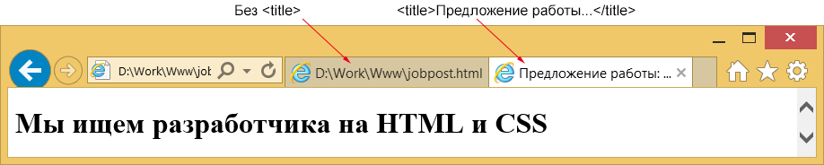
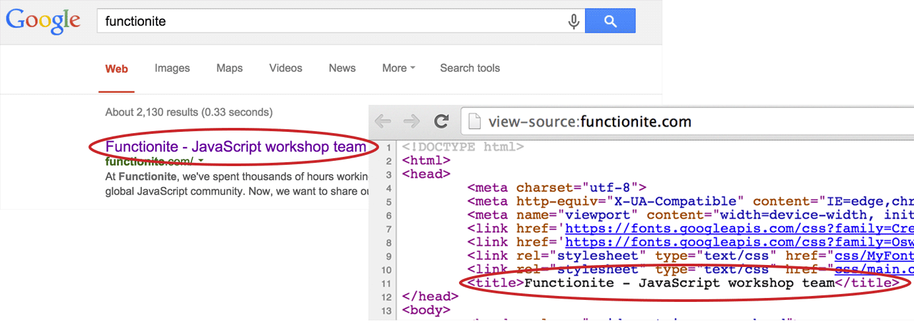
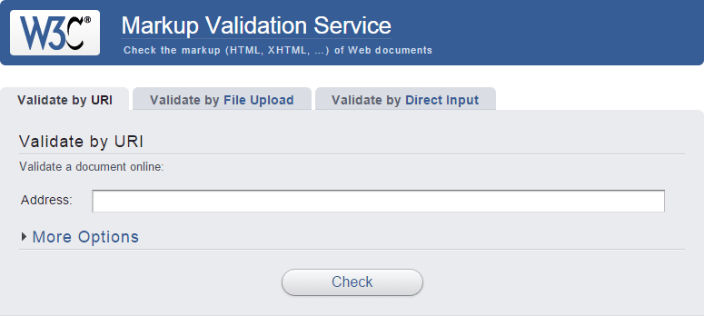
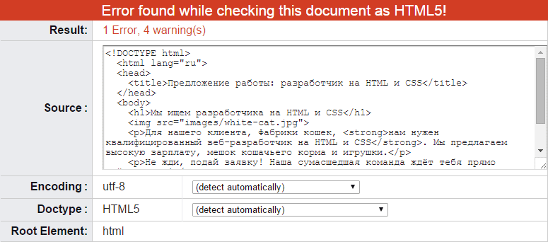
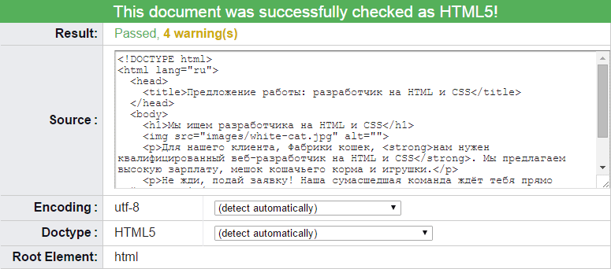
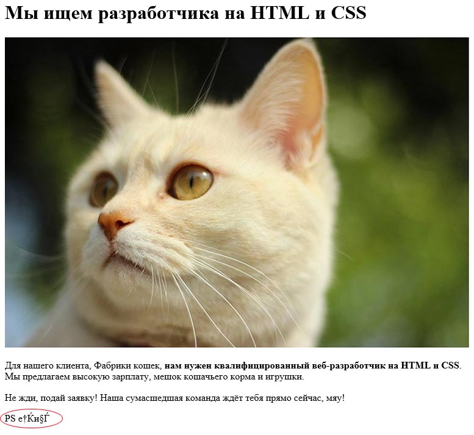

Особенности идеального HTML-кода
На данный момент мы создали наш первый веб-сайт. К сожалению, в соответствии с современными стандартами хороших веб-страниц, работа ещё не завершена. Так же, как у инженеров есть строгий план строительства или у ресторанов есть правила здоровья и безопасности, так и у веб-разработчиков существует набор правил, определяющих хорошо проделанную работу.
Давайте начнём с имеющегося у нас кода, со всеми элементами, о которых мы узнали.
<h1>Мы ищем разработчика на HTML и CSS</h1>
<img src="image/white-cat.jpg">
<p>Для нашего клиента, Фабрики кошек, <strong>нам нужен
квалифицированный веб-разработчик на HTML и CSS</strong>.
Мы предлагаем высокую зарплату, мешок кошачьего корма и игрушки.</p>
<p>Не жди, подай заявку! Наша сумасшедшая команда ждёт тебя прямо сейчас, мяу!</p>В самом верху любой уважающей себя веб-страницы должно быть указание типа документа. Это доктайп.
<!DOCTYPE html>
<h1>Мы ищем разработчика на HTML и CSS</h1>
<img src="image/white-cat.jpg">
<p>Для нашего клиента, Фабрики кошек, <strong>нам нужен
квалифицированный веб-разработчик на HTML и CSS</strong>.
Мы предлагаем высокую зарплату, мешок кошачьего корма и игрушки.</p>
<p>Не жди, подай заявку! Наша сумасшедшая команда ждёт тебя прямо сейчас, мяу!</p>Выделенный выше раздел «говорит» браузеру, что эта страница является HTML-документом и код должен рассматриваться в соответствии с установленными стандартами языка. Это информирует браузер о некоторых правилах, которые будут определять, как наш сайт выглядит. Среди прочего, это помогает браузеру узнать, какие теги могут быть разрешены или запрещены. Также помогает браузеру лучше интерпретировать наш код.
Ниже доктайпа мы хотим поставить тег <html>.
<!DOCTYPE html>
<html>
<h1>Мы ищем разработчика на HTML и CSS</h1>
<img src="image/white-cat.jpg">
<p>Для нашего клиента, Фабрики кошек, <strong>нам нужен
квалифицированный веб-разработчик на HTML и CSS</strong>.
Мы предлагаем высокую зарплату, мешок кошачьего корма и игрушки.</p>
<p>Не жди, подай заявку! Наша сумасшедшая команда ждёт тебя прямо сейчас, мяу!</p>
</html>Заметьте, что этот тег следует закрыть, так что в конце мы должны добавить </ html>.
<!DOCTYPE html>
<html>
код
</html>В результате, всё, что является частью нашего сайта располагается ниже тега <html>. При написании HTML это имеет значение, что код вложен в <html>.
Однако тег <html> не завершён. Мы хотим добавить больше информации о языке нашего сайта. Так как это пример на русском, давайте обозначим его таковым.
<!DOCTYPE html>
<html lang="ru">
<h1>Мы ищем разработчика на HTML и CSS</h1>
<img src="image/white-cat.jpg">
<p>Для нашего клиента, Фабрики кошек, <strong>нам нужен
квалифицированный веб-разработчик на HTML и CSS</strong>.
Мы предлагаем высокую зарплату, мешок кошачьего корма и игрушки.</p>
<p>Не жди, подай заявку! Наша сумасшедшая команда ждёт тебя прямо сейчас, мяу!</p>
</html>Обратите внимание на выделенный фрагмент в изменённом теге <html>. Это называется «атрибут». Атрибуты это модификаторы в HTML и всегда пишутся рядом с тегом, внутри скобок <>. Атрибуты имеют следующий шаблон при написании кода.
тег атрибут="значение"С ростом, разработчик HTML осваивает больше разных атрибутов. В дополнение к lang есть большой выбор атрибутов. Вот только несколько примеров:
- <div id="sidebar"></div> — имя атрибута id, а его значение sidebar;
- <p class="landscape"></p> — имя атрибута class, а его значение landscape;
- <input type="text"> — имя атрибута type, а его значение text.
Мы используем атрибуты, потому что многие теги (например <html>) не содержат всю информацию, которую мы хотим добавить. С атрибутами мы можем модифицировать используемые теги и добавить для них больше полезной информации. В нашем случае мы сообщаем браузеру информацию, что документ написан на русском языке, поэтому модифицировали тег <html> с помощью атрибута lang и дали ему значение ru (русский). В одном теге могут встречаться несколько атрибутов. Вот несколько примеров.
<input type="text" value="enter text here">
<a href="http://functionite.com" title="We Train Developers">HTML Training</a>Важно отметить, что атрибуты также являются частью стандартов HTML, как и вложение тегов. Списки этих атрибутов наряду с тегами, которые они могут модифицировать, можно найти в Интернете.
На самом деле мы уже использовали атрибут, когда первый раз начали создавать веб-страницу! Помните код изображения? Вы поместили его в HTML-документ с помощью следующей строки.
<img src="image/white-cat.jpg">В этом случае тег <img> был модифицирован атрибутом src со значением images/white-cat.jpg.
Сам по себе тег это лишь <img>, так что если мы просто оставим его в одиночестве, браузер не будет иметь никакой возможности для получения источника информации для отображения. Когда мы определяем src, то говорим браузеру: «Эй, загрузи информацию из этого источника». Браузер знает, что нужно искать папку images и в ней файл white-cat.jpg. Мы также можем передать ссылку на любой ресурс в Интернете (если он не ограничен), например http://4.bp.blogspot.com/-z4sMggeD4dg/UO2TB9INuFI/AAAAAAAAdwc/Kg5dqlKKHrQ/s1600/funny-cat-pictures-032-025.jpg.
{kind=link}
В этом суть работы атрибутов. Благодаря атрибутам мы можем добавить богатую и ценную информацию, которая полезна для HTML-тегов.
Теперь вернёмся к нашему документу и добавим другие необходимые компоненты. Взглянем на тег <head>, который содержит элементы, не обязательно полезные для содержимого вашей страницы, но очень полезные для поисковых систем, вкладок браузера и т. д. Например, название веб-страницы помогает поисковым системам находить ваш контент.
<!DOCTYPE html>
<html lang="ru">
<head>
</head>
<h1>Мы ищем разработчика на HTML и CSS</h1>
<img src="image/white-cat.jpg">
<p>Для нашего клиента, Фабрики кошек, <strong>нам нужен
квалифицированный веб-разработчик на HTML и CSS</strong>.
Мы предлагаем высокую зарплату, мешок кошачьего корма и игрушки.</p>
<p>Не жди, подай заявку! Наша сумасшедшая команда ждёт тебя прямо сейчас, мяу!</p>
</html>На данный момент наш тег <head> пуст, но обычно это место, в которое вы хотите поместить всю мета-информацию вроде названия всего документа. Так как мы создаём страницу с предложением работы, давайте сообщим об этом в названии «Предложение работы: разработчик на HTML и CSS». Теперь добавим его!
<!DOCTYPE html>
<html lang="ru">
<head>
<title>Предложение работы: разработчик на HTML и CSS</title>
</head>
<h1>Мы ищем разработчика на HTML и CSS</h1>
<img src="image/white-cat.jpg">
<p>Для нашего клиента, Фабрики кошек, <strong>нам нужен
квалифицированный веб-разработчик на HTML и CSS</strong>.
Мы предлагаем высокую зарплату, мешок кошачьего корма и игрушки.</p>
<p>Не жди, подай заявку! Наша сумасшедшая команда ждёт тебя прямо сейчас, мяу!</p>
</html>Как вы могли заметить, мы добавили название внутрь тега <title>. В чём разница и зачем мы это делаем? На рисунке ниже объясняется, что происходит, если у нас нет тега <title> (слева), и наша страница содержит тег <title> (справа). Сайты с названием более удобны для пользователей браузера и с ними гораздо проще перемещаться среди множества вкладок.

Другим примером служит сайт моей компании. Я использовал «Functionite - JavaScript workshop team» в качестве текста внутри тега <title>. Вот как это показывается в результатах поиска Google:

Как можете видеть, очень важно учитывать это при написании кода вашего сайта. Без названия сайт окажется без имени и будет оставлять плохое впечатление на посетителей. Лично я не стал бы доверять странице, у которой даже нет названия.
Мы должны сделать ещё одну вещь после добавления <head> и вставить тег <body>. Он отделяет содержание всей страницы от <head>. Всё, что отображается на веб-странице, помещается в <body>.
<!DOCTYPE html>
<html lang="ru">
<head>
<title>Предложение работы: разработчик на HTML и CSS</title>
</head>
<body>
<h1>Мы ищем разработчика на HTML и CSS</h1>
<img src="image/white-cat.jpg">
<p>Для нашего клиента, Фабрики кошек, <strong>нам нужен
квалифицированный веб-разработчик на HTML и CSS</strong>.
Мы предлагаем высокую зарплату, мешок кошачьего корма и игрушки.</p>
<p>Не жди, подай заявку! Наша сумасшедшая команда ждёт тебя прямо сейчас, мяу!</p>
</body>
</html>Ура! Это похоже на завершение наших усилий и кажется всё правильно. Для начинающего кодера, вероятно, будет хорошей идеей проверить, всё ли в порядке (например, вложение тегов, правильные атрибуты и др.). Но не у всех есть друзья среди опытных HTML-разработчиков, которые могут проконсультировать. К счастью, имеется специальный инструмент, который мы сможем использовать для проверки правильности кода. Организация W3C, та же группа, что определяет стандарты HTML-документов, сделала инструмент для проверки кода. Инструмент называется HTML-валидатор и доступен по адресу http://validator.w3.org.
Страница должна выглядеть как на картинке ниже.

Давайте воспользуемся инструментом и проверим наш код на корректность.

Ой! У нас есть одна ошибка и несколько предупреждений. Взглянем на них.
Единственная ошибка, о которой сообщает валидатор, связана с нашим изображением. Посмотрим на содержание ошибки.
Элемент img должен иметь атрибут alt, за исключением определённых условий. Для получения подробной информации обратитесь к руководству об альтернативном тексте для изображений.
Получается, что тег <img> в документе всегда должен иметь атрибут alt, который будет использоваться в случае, если браузер не сможет загрузить изображение. Тогда вместо него будет отображаться значение этого атрибута (это лучше, чем пустое пространство, верно?).
Перед выбором значения для атрибута alt давайте обратимся к спецификации HTML, чтобы убедиться, что мы делаем всё правильно. Вот эта страница.
Даёт резервное содержание для изображения. Требования к значению атрибута alt описаны в следующем разделе.
И дальше идут несколько различных сценариев того, когда и как использовать атрибут alt. В нашем случае мы имеем дело с изображением, которое было добавлено для оформления поста и не содержит какого-либо содержания, схемы, или другой информации для читателя. В этом случае мы, согласно спецификации, должны оставить альтернативный атрибут пустым.
Однако декоративные изображения, которые не обсуждаются в окружающем тексте, но в некотором смысле уместны, могут быть включены на страницу с помощью элемента img. Такие изображения являются декоративными и они по-прежнему формально относятся к части контента. В таких случаях атрибут alt должен присутствовать, но его значение должно быть пустой строкой.
В остальных случаях мы хотели бы выбрать текстовую строку, которая может заменить содержание картинки. Подробные указания по некоторым особым случая можно найти в спецификации для тега <img> здесь: http://www.w3.org/wiki/HTML/Elements/img.
Итак, теперь мы знаем, что хотим оставить атрибут alt пустым.
Добавим его.
<img src="image/white-cat.jpg" alt="">И затем проверим наш документ в валидаторе снова.

Всё прошло без ошибок!
Но у нас по-прежнему есть несколько предупреждений. Наиболее важное из них следующее.
Информация о кодировке символов не обнаружена в документе, либо внутри метаэлемента HTML или декларации XML. Она часто рекомендуется, чтобы объявить кодировку в самом документе, особенно, если есть шанс, что документ будут читать или сохранять на диске, CD и т. д.
Но не волнуйтесь, это просто предупреждение. Прежде чем мы попытаемся его понять, рассмотрим следующий пример, который позволит нам лучше понять проблему.
Важно понимать, что ваш сайт могут посещать люди из разных стран, таких как Испания, Китай или Швеции, не говоря уже об остальных. Если вы позволите, они могут оставить комментарий или сообщение, которое, возможно, будет отображаться рядом с вашими статьями. Важно отметить, однако, что в разных странах используются различные языки с их собственными диакритическими знаками. В шведском это может быть ä или ö, в то время как китайский предложит вам целый набор таких 汉语拼音 方案. В глобальной сети важно, чтобы разные языки правильно отображались на одной странице. Посмотрим, что случится, если бы мы использовали китайский язык.
<p>PS 再见</p>Проверим эффект в браузере.

Обратите внимание на последнюю строку, где вместо правильного предложения на китайском, мы видим какие-то странные символы, которые не имеют смысла в любом из современных языков. Не паникуйте, это связано с предупреждением, что мы получили от валидатора. Оказывается мы не добавили особую строку, которая позволяет другим языкам отображаться правильно. В мире компьютеров она называется «кодировка символов». Если мы передали эту информацию HTML-странице, то «говорим» браузеру, чтобы он был готов отобразить широкий набор символов, включая все разные диакритические знаки.
Сделаем это!
<!DOCTYPE html>
<html lang="ru">
<head>
<title>Предложение работы: разработчик на HTML и CSS</title>
<meta charset="utf-8">
</head>
<body>
<h1>Мы ищем разработчика на HTML и CSS</h1>
<img src="image/white-cat.jpg" alt="">
<p>Для нашего клиента, Фабрики кошек, <strong>нам нужен квалифицированный
веб-разработчик на HTML и CSS</strong>. Мы предлагаем высокую зарплату,
мешок кошачьего корма и игрушки.</p>
<p>Не жди, подай заявку! Наша сумасшедшая команда ждёт тебя прямо сейчас, мяу!</p>
</body>
</html>На этот раз мы должны использовать особый тег <meta> с атрибутом charset и дать ему значение utf-8. utf-8 означает специальную кодировку, которая включает большинство языков мира, если не все.
И это всё! Вы только что создали свой самый первый сайт! Поздравляем!